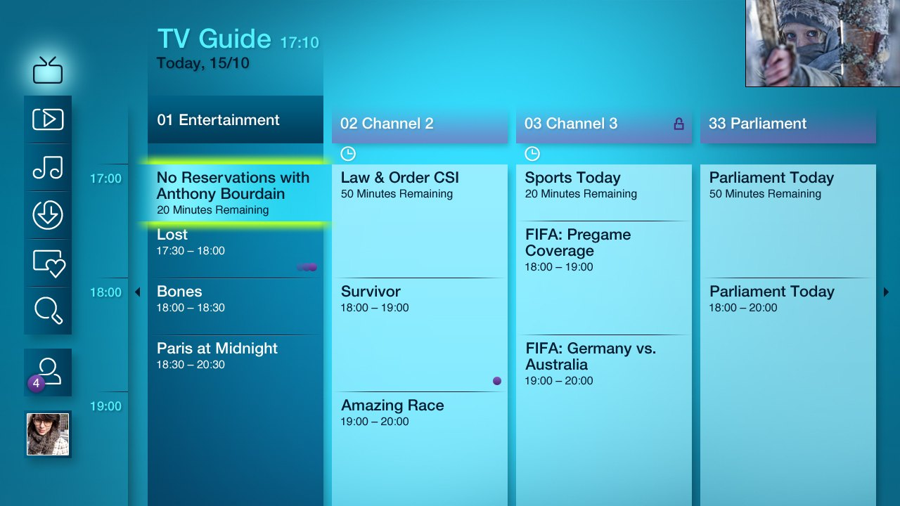
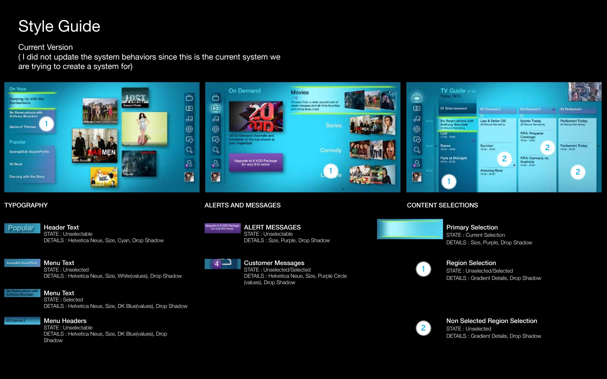
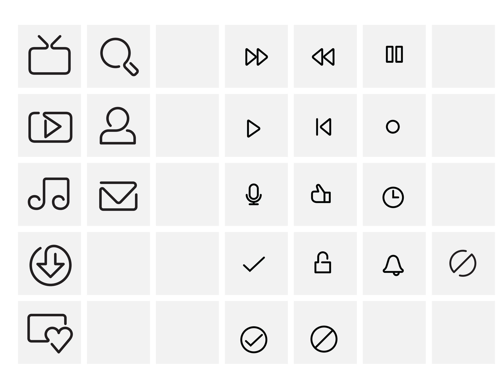
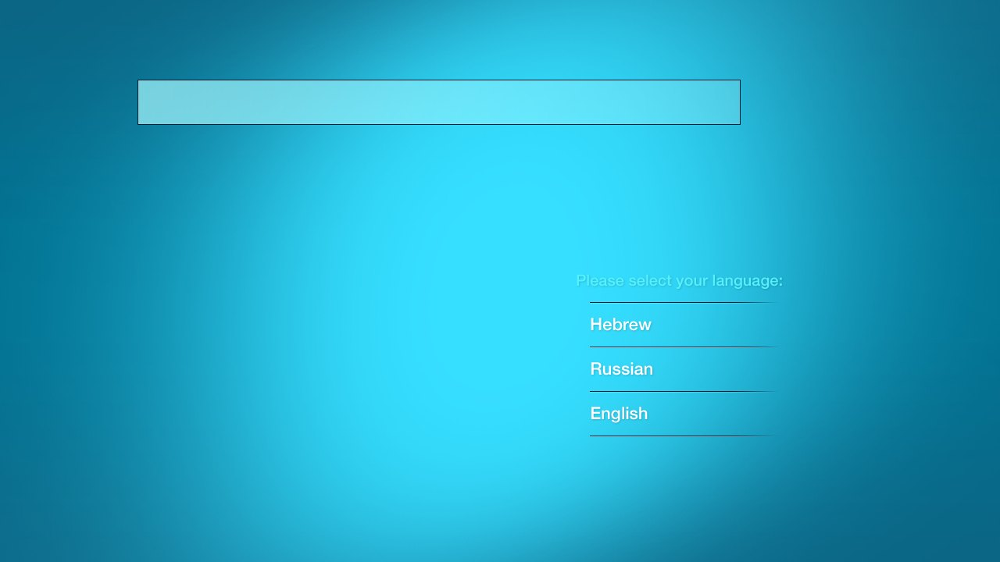

Netvision Arsenal
Visual design for the Netvision Arsenal TV interface, done with Method: home, TV guide, on-demand, music, search and a supporting style guide and icon set.

The problem
Method's Global Wireframes v4.0 (October 2011) defined the structure of the Arsenal TV interface — home, search, Facebook sign-in and sharing, prompts and remote-control mappings. agency:collective's part was the visual design applied to those screens.
The approach
The final screens (November 2011) use a cyan-to-teal field with a vertical icon rail for TV, video, music, downloads, favourites and search. A lime-edged highlight bar marks the current remote-control focus, and purple panels carry secondary selections and alerts. The set covers Home, the TV Guide grid, Series On Demand, Music, Home Media and search results.
A style guide documented the system across versions: header, menu and alert type in Helvetica Neue with drop shadows, and states for primary selection, region selection and non-selected regions. A line-icon set and a language-selection intro screen (Hebrew, Russian, English) round out the files.



Leadership
Directed agency:collective's visual design for the interface in partnership with Method's UX team, who owned the wireframes.